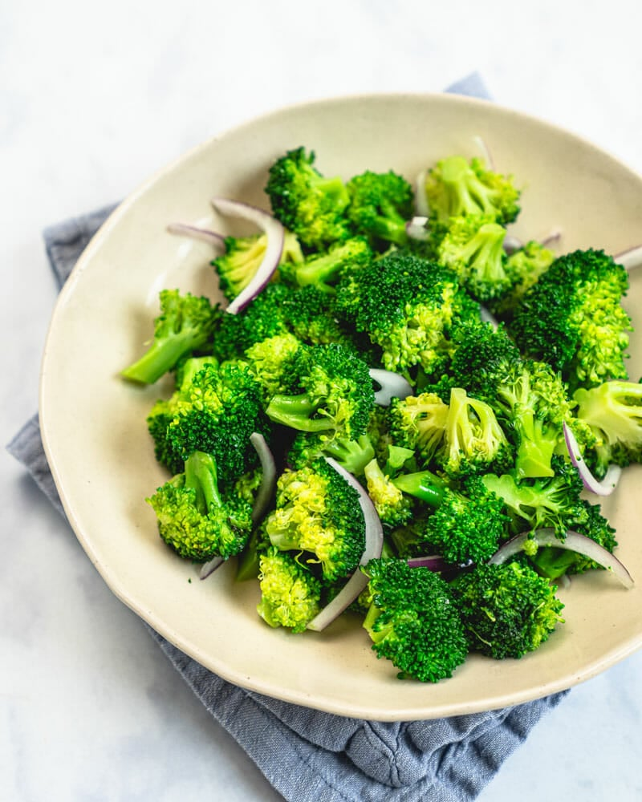

Broccoli

Description
Steamed broccoli is an easy, healthy side dish that turns out bright green
and crisp tender every time. Here’s how to cook broccoli…the best way!
Ingredients
- 1 1/2 pounds (2 large heads) broccoli
- ¼ cup red onions, thinly sliced (or substitute green onion)
- 2 tablespoons olive oil
- ½ teaspoon kosher salt
- ¼ cup feta cheese (optional)
- Freshly ground black pepper
Steps
- Chop the broccoli into florets.
-
If using, thinly slice the onion. Place it in a bowl of water while
you’re making the rest of the recipe, then drain. (This helps to reduce
onion breath and remove some of the spicy bite. If you use green onion,
skip this step!)
-
Place 1 ½ cups water into a saucepan or pot. If using a steamer basket
without a handle, add it to the pot now: the water surface should be
right under the basket. Bring the water to a boil.
-
Once boiling, add the broccoli (in the steamer basket, if it has a
handle). Steam with the lid on 3 to 4 minutes until just tender, testing
with a fork to assess whether it’s done. We like our broccoli on the
crisp side: if you’d like it more tender, cook 1 minute more. Just be
careful not to cook much longer or the color will immediately fade and
it will be overcooked!
-
Carefully remove the broccoli to a bowl. Toss with the olive oil, kosher
salt, feta cheese (optional), and drained red onions. Top with freshly
ground black pepper.
Back to menu